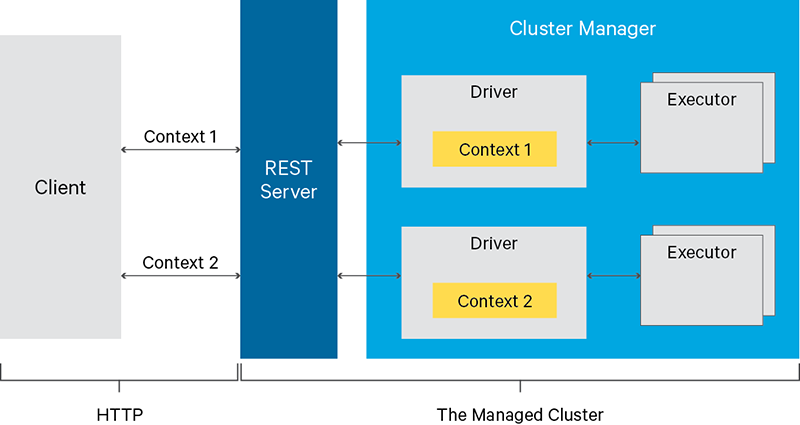

Overview
Livy (currently an alpha release) is a service that enables easy interaction with an Apache Spark cluster over a REST interface. It enables easy submission of Spark jobs or snippets of Spark code, synchronous or asynchronous result retrieval, as well as SparkContext management, all via a simple REST interface or a RPC client library. Livy also simplifies the interaction between Spark from application servers, thus enabling the use of Spark for interactive web/mobile applications. Additional features include:
- Have long running SparkContexts that can be used for multiple Spark jobs, by multiple clients
- Share cached RDDs or Dataframes across multiple jobs and clients
- Multiple SparkContexts can be managed simultaneously, and they run on the cluster (YARN/Mesos) instead of the Livy Server for good fault tolerance and concurrency
- Jobs can be submitted as precompiled jars, snippets of code, or via Java/Scala client API
- Ensure security via secure authenticated communication
- Apache License, 100% open source

Livy Architecture